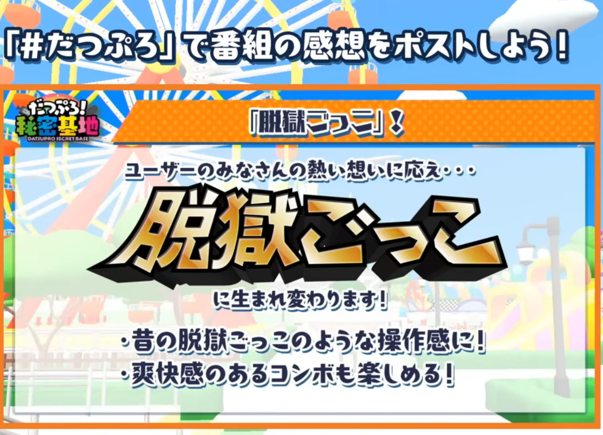

かつて多くのプレイヤーに愛され、2023年11月に惜しまれつつサービスを終了したスマホゲームの金字塔「脱獄ごっこ」。
「PRO」ではなく、あのシンプルで懐かしい「脱獄ごっこ」が遊びたい……そんなファンの願いがついに届きました！
なんと、「脱獄ごっこ」がNintendo Switch版として復活することが正式に発表されました！
本記事では、昨日（2025年11月21日）の公式生放送で発表された最新情報をもとに、発売日や新要素について詳しくまとめます。
- タイトル：脱獄ごっこ Nintendo Switch Edition
- 発売日：2025年12月25日（予定）
- 価格：未定
- 新要素：新モード「ホシトリ」、新スキン追加など
- スマホでプレイできるか？
脱獄ごっこ Nintendo Switch Edition 発売決定！
2025年11月21日に行われた公式生放送「だつぷろ！秘密基地～3周年記念すぺしゃる～」にて、LiTMUS株式会社と株式会社ゲームスタジオより、『脱獄ごっこ Nintendo Switch Edition』の発売が発表されました。
シリーズ累計1,000万ダウンロードを記録した伝説の非対称型対戦アクションが、ついにコンシューマーゲームとして帰ってきます。
発売日はいつ？
気になる発売日ですが、放送内での発表によると2025年12月25日（木）を予定しているとのことです。
今年のクリスマスプレゼントはこれで決まりですね！
価格については現時点では「未定」となっており、続報が待たれます。ダウンロード専用ソフトとなる可能性が高そうです。
スマホ版との違い・新要素は？
「復活」といっても、ただの移植ではありません。Nintendo Switch Editionならではの新要素も多数追加される予定です。
1. 新モード「ホシトリ」追加
従来の人気モード（脱獄ごっこ、ケイドロなど）に加え、Switch版オリジナルの新対戦モード「ホシトリ」が実装されます。
詳細はまだ明かされていませんが、名前から推測すると星を奪い合うチーム戦のようなルールかもしれません。
2. キャラクター数は計52体！
懐かしの初期スキンはもちろん、「カウボーイレッド」や「ガンウーマン」といった新しいスキンも登場し、合計52体のキャラクターが使用可能になります。
3. 新マップの登場
既存のマップに加え、Switch版のために調整された新マップも登場するとのこと。大画面で遊ぶ脱獄ごっこの世界は新鮮に感じられそうです。
4. コンボ技の復活！

運営は脱獄ごっこPROで消したコンボを復活させると発表しました。爽快感を楽しめるあの頃の脱獄ごっこが返ってくる感じがします。
【実際のプレイ映像】
脱獄ごっこPROとの関係は？
現在配信中の『脱獄ごっこPRO』はどうなるの？と心配な方もいるかもしれませんが、ご安心ください。
『脱獄ごっこPRO』は2025年11月17日に3周年を迎え、こちらも大型アップデートが実施されます。新キャラクター「モルル」の登場や、3周年記念バトルパスなどが発表されており、運営は今後も継続されます。
つまり、今後は以下の2つのスタイルで遊べることになります。
- 脱獄ごっこPRO（スマホ）：進化し続ける最新のバトロワ＆多機能版
- 脱獄ごっこ Switch Edition：シンプルで懐かしい操作感＋新要素の買い切り（予想）版
スマホで遊べる？
はい。発表内でスマホでもプレイできるとの発言がありました。まとめ：12月25日の発売を待とう！
サービス終了から約2年。多くの復活を望む声に応える形で実現したSwitch版の発売は、ファンにとって最高のニュースとなりました。
発売予定日は2025年12月25日です。
オンラインプレイにも対応しているため、かつてのフレンドと一緒に、あのわちゃわちゃした脱獄ごっこをもう一度楽しみましょう！
そしてスマホ対応と配信内で発表されています。楽しみですね。
続報が入り次第、本ブログでも更新していきます。